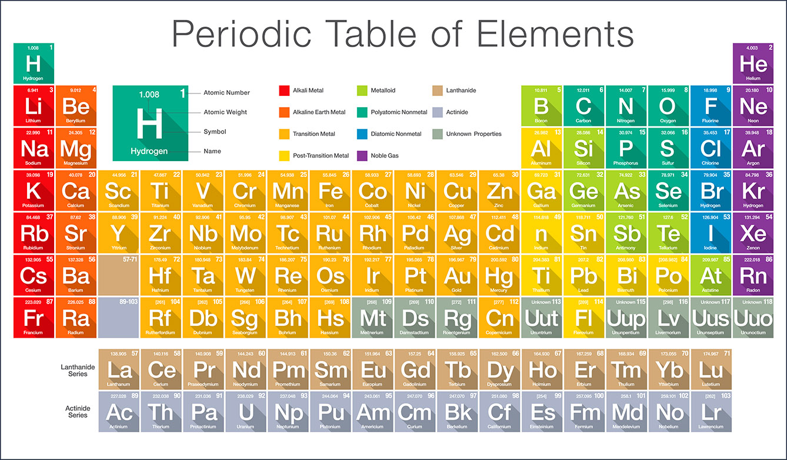

Periodic Table
Home
About us
Element
Gallery
Feedback

The element of the four orbital’s are as follows: S-orbital are 13 element included such as Hydrogen1, Potasium19, barium56, calcium20 etc.
D- Orbital are 40 element included such as Iron26, Ni-nickel28, Magenesium25 etc.
P-orbital are 37 element included such as c-carbon6, nitrogen4, helium2 etc.
F-orbital are 28 element included such as cerium58, thorium90, fermium100etc.
The organization of the periods 4 groups of the periodic table have to do with the electronic orbital’s of the atoms.
Since electronics so small, we cannot tell exactly where the electron is around the nucleus at any specific point in time.
There for we use probabilities is the like hood of an occurrence.
Basically the periodic element around a need to organize the element this was a defined concern as very element has its fundamental pattern is known as periodicity of the
element and the basic of the periodic laws. Periodic tables are element 4 groups atomic number, radiance and weight of the periodic table information.